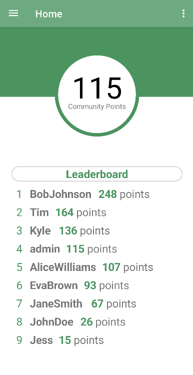

Worksample - PikUp

Task — Create an Android application to help people connect and build their community. In this application, you can game-ify picking up trash to minimize litter, you can also pick up and donate nearby tools to share, and split a shopping bill with someone in exchange for a share of the groceries, to help minimize food insecurity and food waste.
Steps:
- Create a SQL database for the application to store user data, location data, co-shop data, tool data, and trash pickup data.
- Connect the Android Studio application to the database.
- Create a Login page and account system.
- Create a Dashboard page, displaying the user's points, and a leaderboard of the top 10 users' scores.
- Create a Profile page
- Import an external map service, to display a map of the user's location inside the application
- Create the Trash Cleanup page and functionality
- Create the Tool Share page and functionality
- Create the Co-Shop page and functionality, based on the winning 2023 Challenge Nova Scotia proposal, which you can find here
- Create a product details page, which will display all information of a selected product
- Create payment functionality
My Duties:
- Designing and implementing the Dashboard page and its SQL queries
- Designing and implementing the Product Details page and its SQL queries
- Optimizing the tables and fields in the database
- Troubleshooting and testing
Skill area — User Experience (UX)
Work Example

Key Learnings:
- Technical skills used:
- Kotlin, SQL, XML, Figma, Systems Analysis
- Progression of learning:
- The most I've ever done coding an Android app before was plotting bus locations on a map. This was a big step up, and opened my eyes to the fact that there is so much more to all of these languages that we don't learn in college, and that we don't even fathom is possible. Neverless, my team and I were able to put together a mostly functional prototype of the PikUp application, and we're all very proud of ourselves.
- How would I make it better?
- I didn't have much time to work on this application at all over the three months, and I didn't do as much as I hoped I would be able to. I had gotten a lot better at time management before working on this project, and it showed, but I think I have to work on it even more. I would have felt a lot more satisfied in the end.
Business benefits:
- Because of the encouraged community engagement, brand awareness, and ease-of-use of this application, this shows that I can contribute to a team that develops programs that:
- Can greatly improve communities
- Can help enhance the team's reputation
- Can create many networking opportunities
- Have very user-friendly interfaces
Connection to Me:
- It felt really nice that an idea that my peers and I came up with was being implemented into a big group capstone, even with the flaws the idea had. I'm very happy with how the first prototype of Co-Shop turned out, and I would love to take it a bit further.
- This was my first ever group coding project, and it was a very nice first impression, even with all of the setbacks. I'm looking forward to collaborating with even more wonderful programmers in the future!